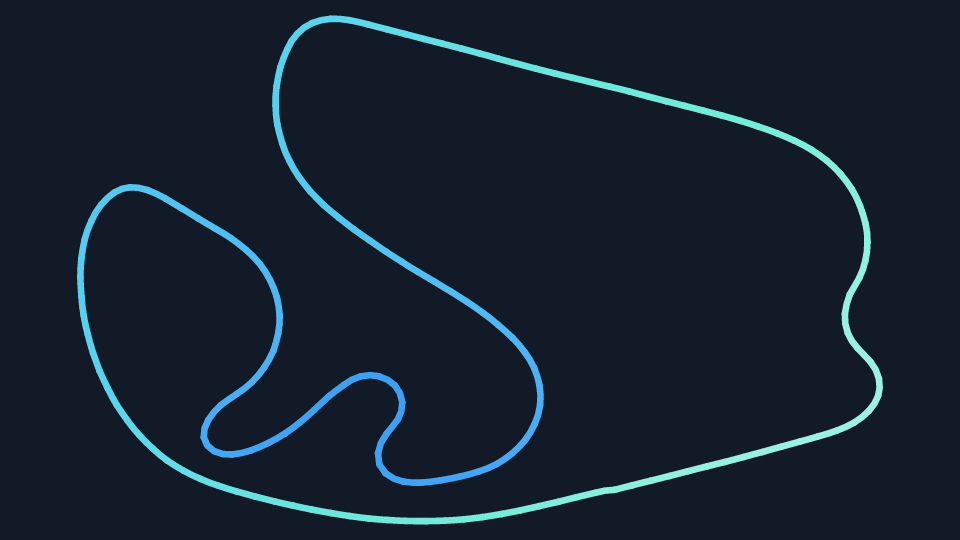

Install Drive, then open Rookline Drive (Desktop) from the Windows Start menu.
Start Le Mans Ultimate in its normal desktop mode.
A little more detail
Drive needs Windows 10 version 2004 or later, a 64-bit PC and Microsoft Edge WebView2. The installer includes .NET. The Desktop shortcut starts the game-window overlay mode.
Using the portable ZIP? Start Rookline.Drive.exe --drive-mode=desktop.
SteamVR
Start SteamVR, then open Rookline Drive.
Use the regular Start menu shortcut for the VR HUD.
A little more detail
Drive’s VR HUD uses SteamVR. You’ll also need WebView2 and a supported Windows 64-bit PC. The installer includes .NET.
You can arrange your VR panels before opening LMU. In Drive, choose Settings → HUD panels → Open in VR, then open Drive in the SteamVR dashboard.
Enter LMU’s driving view, then choose Show game HUD in Drive.
Your panels sit over the game window. The game’s client area is their canvas.
Nothing showing?
Use the Desktop shortcut, enter the driving view and try Show game HUD. Drive hides the overlay in menus and the garage.
If Drive starts minimized, open it from the notification-area icon. Right-click it and choose Open Rookline Drive.
SteamVR
Open Drive in the SteamVR dashboard, then enter LMU’s driving view.
The dashboard is your control room. The HUD is your driving view.
Set up before driving
Choose Edit HUD layout while the dashboard is open. Labelled layout previews let you arrange panels even with LMU closed.
VR help in the dashboard has the in-headset controls guide.
A place for everything.
03 / FIND YOUR SPACE
Make yourself at home.
Desktop
Right-click Drive’s notification-area icon and choose Edit game HUD.
Drag a panel to move it.
Drag an edge or corner to resize it.
Use the toolbar checkboxes to choose your panels.
Good to know
Leave room for any LMU panels you want to keep. You can put Drive’s panels where they suit your screen; their contents resize with them.
Restore defaults puts the starting layout into the editor. It becomes your saved layout only when you choose Save & drive.
SteamVR
Choose Edit HUD layout and keep the SteamVR dashboard open.
Point at a panel. Its outline becomes stronger.
Hold the trigger to move it; release to place it.
Point at another panel and repeat.
Size, distance and shape
While editing, use thumbstick up/down to change size. Right brings a panel closer; left moves it farther away. Choose To flat or To curved for the selected panel’s shape.
Grid guides help line up your panels. Labels also identify panels that your normal HUD view hides.
TOWERWEATHERTIMINGMAPYOUR VIEWTYRESSPEEDO
A starting point. Your layout is yours.
04 / MAKE IT STICK
Happy? Save it.
Desktop
Choose Save & drive to keep the layout and leave editing.
Cancel discards that edit. Back to Drive returns to the companion window.
Next time you drive
Drive keeps your saved desktop layout. Your VR placements are stored separately.
To make another adjustment, use the notification-area icon’s Edit game HUD again.
SteamVR
Click Save placement once, look for Saved, then choose Done editing.
One save keeps all moved panels together.
Saving and cancelling
Use the on-screen Save placement control. Done editing or closing the dashboard ends editing without automatically saving.
Cancel edit discards the selected panel’s unfinished edit. Other pending panel edits remain available to save.
To adjust again after saving, keep the dashboard open and make a fresh trigger press after releasing it.
✓
05 / READ THE ROAD
A glance, then go.
The map brings traffic, yellow sectors and changing conditions into one view.
White · DryTeal · DampBlue · Wet
What the map is telling you
Surface colours are estimates. Each stretch can get wetter or drier while you’re parked; tyre observations refine the area you pass over.
All cars, Your class and Follow your car change your view of the traffic. Follow keeps your direction pointing up.
In online sessions, gold and pink dashes mark corroborated faster and slower sections. They are separate from the surface colours.
The rest of your cockpit
Speedo groups speed, gear, RPM and supported car information. Tyres brings the four corners together. Timing shows laps, sectors and delta.
Tower follows your class and the other class leaders. Weather combines current conditions with the session forecast. Flags & pit gives warnings and pit-service status room when needed.
Virtual Energy appears for cars that have it. Electronics, warnings and other readings depend on the car and available game data.

After the rain · Interlagos.
06 / ONE BUTTON AWAY
Less HUD. More horizon.
Bind Previous HUD view and Next HUD view in Drive’s Settings → Controls → HUD navigation.
Choose Bind, release any held input, then press the wheel button or key you want to use.
Choose what’s in your cycle
In Settings → HUD panels → Views in HUD cycle, choose your views and their panels, then select Save views. Keep at least one view enabled.
Full, Race Overview, Timing & Position, Car & Field, Car Condition, Lap Focus, Minimal and Clear give you different amounts of information. Disabled views are skipped.
Clear hides all Drive panels. Previous or Next brings a view back. Cycling changes visibility without moving your saved panels.
Desktop
Keyboard bindings work while Drive or LMU is in front. New installations start unbound.
SteamVR
Use Settings → Controls for wheel buttons or keys. Configure VR controller actions in SteamVR bindings. VR help covers recenter and recovery.
Look for Drive in the Windows notification area, including its hidden icons. Right-click the icon and choose Open Rookline Drive. Starting minimized and minimizing to the notification area are separate optional preferences.
My panels disappeared.
Check whether your HUD cycle is on Clear. Use Previous or Next HUD view to bring panels back. The desktop overlay also hides in LMU menus and the garage.
Can I keep LMU’s HUD too?
Yes. Choose which Drive panels you want and position them around the LMU panels you keep.
Where are updates?
Open Settings → About → Application to check for updates. Download and install verifies the installer, closes Drive safely and opens setup. Saved layouts and settings are preserved.